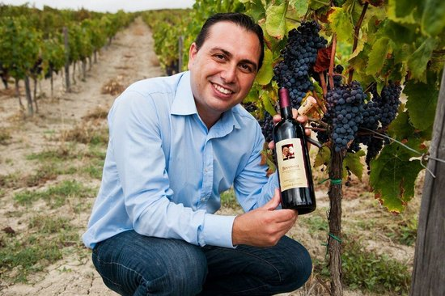
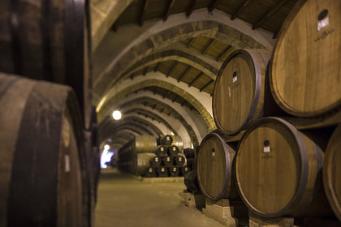
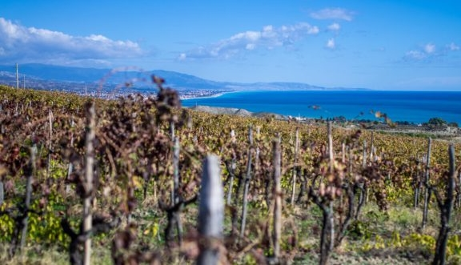

<section class="info-section" data-ng-controller="WinesController as wineselection">
    <div class="container about-us-container">
        <article>
            <div class="row">
                <header class="about-us-header">
                    
                    <h1>Ionica Wine Cellars</h1>
                </header>
                <br>
                <div class="col-lg-3">
                    
                </div>

                <div class="col-lg-9 about-us-info-first">

                    <p>Is the UK official distributor of the Lavorata Winery. It was founded in 1958 by Vincenzo Lavorata.

                        The winery is situated in Roccella Jonica a town in the southern part of the Ionian Coast and close to the splendid “Stilaro-Allaro” valley in the Province of Reggio Calabria.

                        This area is not far from the sea and mountains. Due to the climate and the soil it is an excellent area for viticulture in Calabria and southern Italy.

                    </p>
                </div>
            </div>
        </article>
        <!--This row contains the wine display that pull a type of wine randomly using the "ran-1" variable from the Scope, -1 one
        is to take an item that precede the item in the next display when pulling from the wines file-->
        <article>
            <div class="row">

                <div class="col-lg-9 about-us-info">
                    <p>The family-run business is dedicated to the healthy, clean cultivation of their vines and a scrupulous and attentive selection of grapes and must. The ancient and deep link between wine making and the area, which the passion and serenity of management have brought the company to the increased production and recognition at high levels.</p>
                </div>
                <div class="col-lg-3 ">
                    
                </div>
            </div>
        </article>
        <article>
            <div class="row">

                <div class="col-lg-3">
                    
                </div>
                <div class="col-lg-9 about-us-info">
                    <p>
                        The vineyards are situated around the town of Riace and include the hills and the plains sweeping down to the sea. The same sea in which Tideo and Anfiarao the 5th century BC Bronze warriors were found.</p>
                </div>

            </div>
        </article>
    </div>
</section>
